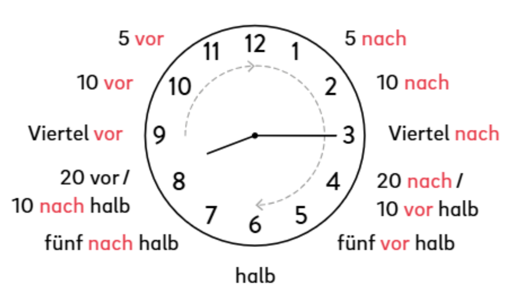

Grammatik
Ngữ pháp tiếng Đức A1 cốt lõi
Tổng hợp và hệ thống các mảng ngữ pháp nền tảng xuất hiện trong toàn bộ giáo trình.
Đại từ dùng để thay thế cho người hoặc vật đóng vai trò làm chủ ngữ trong câu:
↔ Vuốt ngang để xem đủ bảng
| Số lượng | Ngôi | Tiếng Đức | Ý nghĩa / Cách dùng |
|---|---|---|---|
| Số ít (Singular) |
Ngôi thứ nhất | ich | Tôi (bản thân người nói) |
| Ngôi thứ hai | du | Bạn (thân mật, bằng vai phải lứa) | |
| Ngôi thứ ba | er / es / sie | Anh ấy / Nó / Cô ấy (người hoặc vật được nói tới) | |
| Sie | Ngài / Các ngài (Trang trọng, lịch sự - luôn viết hoa chữ S) | ||
| Số nhiều (Plural) |
Ngôi thứ nhất | wir | Chúng tôi / Chúng ta |
| Ngôi thứ hai | ihr | Các bạn (gọi nhóm người thân mật) | |
| Ngôi thứ ba | sie | Họ / Chúng nó |
a) Câu hỏi có từ để hỏi (W-Frage)
Quy tắc: Từ hỏi đứng đầu tiên, Động từ đứng vị trí số 2, theo sau là Chủ ngữ.
❓ Woher kommen Sie? / Was bist du von Beruf?
▲ Ich komme aus Vietnam. (Động từ luôn ở vị trí số 2 trong câu trần thuật)
b) Câu hỏi Không-Có (Ja / Nein-Frage)
Quy tắc: Không dùng từ hỏi, đảo Động từ lên vị trí số 1 đứng đầu câu.
❓ Wohnen Sie in Hanoi?
▲ Ja, ich wohne in Hanoi. (Vâng, tôi sống ở HN)
▲ Nein, ich wohne in Danang. (Không, tôi sống ở Đà Nẵng)
Đuôi của mạo từ sở hữu phụ thuộc hoàn toàn vào Giống (nhóm danh từ) đứng ngay sau nó:
↔ Vuốt ngang để xem đủ bảng
| Chủ sở hữu | Giống Đực (der) Ví dụ: Vater (bố) | Giống Trung (das) Ví dụ: Kind (con) | Giống Cái (die) / Số nhiều Ví dụ: Mutter (mẹ), Kinder |
|---|---|---|---|
| ich (của tôi) | mein Vater | mein Kind | meine Mutter / Kinder |
| du (của bạn) | dein Vater | dein Kind | deine Mutter / Kinder |
Hễ danh từ đi kèm thuộc giống Cái (
die) hoặc ở dạng số nhiều thì bạn chỉ cần thêm đuôi
"e" vào sau từ sở hữu (meine, deine). Còn giống đực và giống trung giữ
nguyên mẫu gốc.
Cách 1: Sử dụng "kein" (Phủ định cho Danh từ)
Chỉ sử dụng để phủ định những danh từ đi với mạo từ không xác định (ein/eine) hoặc danh từ không có mạo từ.
• Das ist một cái cây (ein Baum) → Das ist kein Baum. (Đó không phải một cái cây)
• Ich habe con cái (Kinder) → Ich habe keine Kinder. (Tôi không có con - thêm đuôi "e" vì số nhiều)
Cách 2: Sử dụng "nicht" (Phủ định cho Động từ, Tính từ, Tên riêng, Địa điểm)
Thường đứng sau động từ hoặc đứng trước tính từ/địa điểm cần phủ định.
• Phủ định động từ: Ich spreche Deutsch → Ich spreche nicht Deutsch.
• Phủ định thông tin: Das stimmt → Das stimmt nicht. (Điều đó không đúng)
Các cách diễn đạt thời gian cơ bản.

| Cấu trúc | Ví dụ |
|---|---|
| im (vào...) |
im Sommer (vào mùa hè) im Mai (vào tháng Năm) im November (vào tháng Mười Một) |
| am (vào...) |
am Mittwoch (vào thứ Tư) am Nachmittag (vào buổi chiều) am Mittwochnachmittag (vào chiều thứ Tư) |
| Lưu ý | in der Nacht (không dùng am) |
| um (vào lúc...) | um 20 Uhr (vào lúc 20h) um halb sieben (vào lúc 6h30) um zehn nach neun (vào lúc 10h10) um viertel vor zehn (vào lúc 9h45) um fünf nach halb zwei (vào lúc 1h35) |
| von ... bis ... (từ ... đến ...) |
von 13 bis 19 Uhr (từ 13h đến 19h) von Montag bis Freitag (từ thứ Hai đến thứ Sáu) |
Trong câu trần thuật tiếng Đức, động từ chia luôn đứng ở vị trí số 2. Thành phần đứng đầu câu có thể là chủ ngữ, thời gian, địa điểm hoặc một thông tin khác, nhưng động từ vẫn luôn ở vị trí thứ hai.
| Vị trí 1 | Vị trí 2 (Động từ) | Phần còn lại | Dịch tiếng Việt |
|---|---|---|---|
| Ich | habe | am Mittwochabend Zeit. | Tôi có thời gian vào tối thứ Tư. |
| Am Mittwochabend | habe | ich Zeit. | Vào tối thứ Tư, tôi có thời gian. |
✅ Động từ chia (Verb) luôn ở vị trí số 2.
Nếu đưa thời gian, địa điểm hoặc một thành phần khác lên đầu câu, thì chủ ngữ sẽ đứng sau động từ.
Ví dụ:
• Ich wohne in Berlin. → Tôi sống ở Berlin.
• In Berlin wohne ich. → Ở Berlin, tôi sống.
Nominativ dùng khi danh từ là chủ ngữ hoặc đứng sau sein. Akkusativ dùng khi danh từ là tân ngữ trực tiếp, thường đứng sau các động từ như haben, brauchen, suchen, nehmen và möchten.
• der / das / die: mạo từ xác định – người hoặc vật cụ thể.
• ein / eine: mạo từ không xác định – một người hoặc vật chưa xác định.
• kein / keine: mạo từ phủ định – không có hoặc không phải.
↔ Vuốt ngang để xem đủ bảng
| Cách | Mẫu câu | Giống | Mạo từ xác định | Mạo từ không xác định | Mạo từ phủ định | Danh từ |
|---|---|---|---|---|---|---|
| Nominativ | Das ist | ● der | der | ein | kein | Apfel |
| ● das | das | ein | kein | Brot | ||
| ● die | die | eine | keine | Banane | ||
| Das sind | ● Plural | die | — | keine | Birnen | |
| Akkusativ | Ich möchte / habe / nehme... | ● der | den | einen | keinen | Apfel |
| ● das | das | ein | kein | Brot | ||
| ● die | die | eine | keine | Banane | ||
| ● Plural | die | — | keine | Birnen |
Trong Akkusativ, chỉ giống đực thay đổi:
• der → den
• ein → einen
• kein → keinen
das, die và số nhiều giữ nguyên. Số nhiều không có mạo từ không xác định tương đương với ein/eine.
• Das ist ein Apfel. (Nominativ)
• Ich möchte einen Apfel. (Akkusativ)
• Das ist keine Banane. (Nominativ)
• Ich möchte keine Banane. (Akkusativ)
• Das sind Birnen. / Ich möchte keine Birnen.
Trong tiếng Đức, danh từ số nhiều không có một công thức duy nhất. Tùy từng danh từ, ta có thể giữ nguyên, thêm đuôi hoặc đổi nguyên âm. Mạo từ xác định ở số nhiều luôn là die.
↔ Vuốt ngang để xem đủ bảng
| Cách tạo số nhiều | Singular | Plural |
|---|---|---|
| - (Không đổi) | das Brötchen | die Brötchen |
| ¨ (Đổi nguyên âm) | der Apfel | die Äpfel |
| -e | das Brot | die Brote |
| ¨ + -e | der Baum | die Bäume |
| -er | das Ei | die Eier |
| ¨ + -er | das Buch | die Bücher |
| -n | die Birne | die Birnen |
| -en | die Uhr | die Uhren |
| -s | das Croissant | die Croissants |
• Mạo từ xác định số nhiều luôn là die.
• Danh từ số nhiều có thể: giữ nguyên, thêm -e, -er, -n, -en hoặc -s.
• Một số danh từ còn đổi nguyên âm: a → ä, o → ö, u → ü.
• Das ist ein Apfel. → Das sind zwei Äpfel.
• Ich kaufe ein Brot. → Ich kaufe drei Brote.
• Das ist eine Birne. → Das sind viele Birnen.
• Ich habe ein Buch. → Ich habe zwei Bücher.
Trong tiếng Đức, hai hoặc nhiều từ có thể ghép lại thành một danh từ mới. Danh từ ghép được viết liền và viết hoa chữ cái đầu.
Từ bổ nghĩa + Danh từ chính = Danh từ ghép
Danh từ cuối cùng quyết định giống (der, die, das) và ý nghĩa chính của toàn bộ từ ghép.
↔ Vuốt ngang để xem đủ bảng
| Cách ghép | Cấu tạo | Danh từ ghép | Nghĩa |
|---|---|---|---|
| Danh từ + Danh từ | die Banane + die Milch | die Bananenmilch | sữa chuối |
| Danh từ + Danh từ | die Küche + der Tisch | der Küchentisch | bàn bếp |
| Động từ + Danh từ | wohnen + das Zimmer | das Wohnzimmer | phòng khách |
das Kinderzimmer: Zimmer là căn phòng, còn Kinder bổ sung ý nghĩa → phòng trẻ em.
Vì từ cuối là das Zimmer, danh từ ghép cũng dùng das.
Động từ tách gồm một tiền tố và một động từ chính. Khi chia ở thì hiện tại (Präsens), động từ chính được chia theo chủ ngữ, còn tiền tố tách ra và đứng cuối câu.
Chủ ngữ + động từ đã chia + thành phần khác + tiền tố.
Ví dụ: aufstehen = auf + stehen
Ich stehe um sechs Uhr auf.
↔ Vuốt ngang để xem đủ bảng
| Động từ tách | Tiền tố | Động từ chính | Nghĩa |
|---|---|---|---|
| aufstehen | auf | stehen | thức dậy |
| einkaufen | ein | kaufen | mua sắm |
| aufräumen | auf | räumen | dọn dẹp |
| anrufen | an | rufen | gọi điện |
| abholen | ab | holen | đón |
| mitkommen | mit | kommen | đi cùng |
Vị trí trong các loại câu
Động từ đã chia và tiền tố tạo thành một khung câu (Satzklammer). Các thành phần khác nằm ở giữa hai phần này.
↔ Vuốt ngang để xem đủ bảng
| Loại câu | Cấu trúc | Ví dụ | Nghĩa |
|---|---|---|---|
| Câu trần thuật | Chủ ngữ + động từ + ... + tiền tố | Sie steht um sechs Uhr auf. | Cô ấy thức dậy lúc 6 giờ. |
| Trạng ngữ đầu câu | Thời gian + động từ + chủ ngữ + ... + tiền tố | Am Morgen räumt Hoa die Wohnung auf. | Buổi sáng Hoa dọn dẹp căn hộ. |
| W-Frage | Từ hỏi + động từ + chủ ngữ + ... + tiền tố? | Wann steht Hoa auf? | Hoa thức dậy khi nào? |
| Ja-/Nein-Frage | Động từ + chủ ngữ + ... + tiền tố? | Kauft Hoa am Morgen ein? | Buổi sáng Hoa có đi mua sắm không? |
• Ich rufe meine Mutter an. (Tôi gọi điện cho mẹ.)
• Wir kaufen Kartoffeln ein. (Chúng tôi mua khoai tây.)
• Kommst du mit? (Bạn có đi cùng không?)
❌ Ich aufstehe um sechs Uhr.
✅ Ich stehe um sechs Uhr auf.
Hãy chia động từ chính và đặt tiền tố ở cuối câu.
zuerst, dann và danach dùng để kể các hành động theo thứ tự thời gian.
↔ Vuốt ngang để xem đủ bảng
| Trạng từ | Nghĩa | Ví dụ |
|---|---|---|
| zuerst | đầu tiên, trước hết | Zuerst weckt Frau Fleißig ihre Kinder auf. |
| dann | sau đó, tiếp theo | Dann bringt sie ihre Tochter in den Kindergarten. |
| danach | sau đó, sau việc vừa nhắc | Danach kauft sie im Supermarkt ein. |
Khi trạng từ thời gian đứng đầu câu, nó chiếm vị trí số 1. Động từ đã chia vẫn luôn đứng ở vị trí số 2, còn chủ ngữ chuyển xuống sau động từ.
Zuerst + weckt + Frau Fleißig + ihre Kinder + auf.
Hai cách sắp xếp câu
↔ Vuốt ngang để xem đủ bảng
| Vị trí 1 | Vị trí 2 | Thành phần còn lại | Tiền tố tách |
|---|---|---|---|
| Frau Fleißig | weckt | zuerst ihre Kinder | auf. |
| Zuerst | weckt | Frau Fleißig ihre Kinder | auf. |
1. Zuerst weckt Frau Fleißig ihre Kinder auf.
2. Dann bringt sie ihre Tochter in den Kindergarten und ihren Sohn in die Schule.
3. Danach kauft sie im Supermarkt ein.
Động từ đã chia đứng ở vị trí 2, nhưng tiền tố vẫn đứng cuối câu:
• aufwecken → Zuerst weckt sie die Kinder auf.
• einkaufen → Danach kauft sie im Supermarkt ein.
Doch được dùng để phản bác một câu hỏi hoặc nhận định phủ định. Nó mang nghĩa: “Có chứ”, “Đúng là có”.
• Câu hỏi khẳng định → trả lời bằng ja hoặc nein.
• Câu hỏi phủ định → dùng doch nếu muốn phản bác ý phủ định.
So sánh cách trả lời
↔ Vuốt ngang để xem đủ bảng
| Loại câu hỏi | Câu hỏi | Trả lời đồng ý | Trả lời phủ định |
|---|---|---|---|
| Khẳng định |
Essen wir jetzt Schokolade? Bây giờ chúng ta ăn sô-cô-la nhé? |
Ja. Có. |
Nein. Không. |
| Phủ định |
Essen wir jetzt keine Schokolade? Bây giờ chúng ta không ăn sô-cô-la à? |
Doch! Có chứ! Chúng ta có ăn. |
Nein. Không. Chúng ta không ăn. |
• Trinkst du keinen Kaffee?
– Doch, ich trinke Kaffee.
Bạn không uống cà phê à? – Có chứ, tôi có uống.
• Kommst du heute nicht?
– Doch, ich komme heute.
Hôm nay bạn không đến à? – Có chứ, hôm nay tôi đến.
• Hast du keine Zeit?
– Nein, ich habe keine Zeit.
Bạn không có thời gian à? – Không, tôi không có thời gian.
Doch = phản bác câu phủ định.
„Du kommst nicht.“ – „Doch!“
“Bạn không đến.” – “Có chứ, tôi có đến!”
man được dùng khi nói chung về mọi người hoặc khi không muốn nói rõ ai thực hiện hành động. Tùy ngữ cảnh, nó có thể được dịch là người ta, mọi người, chúng ta hoặc ai đó.
man ≈ alle Menschen (mọi người nói chung)
Động từ đi với man luôn được chia giống ngôi er / sie / es.
Cấu trúc câu
↔ Vuốt ngang để xem đủ bảng
| Chủ ngữ | Động từ nguyên mẫu | Động từ đã chia | Ví dụ |
|---|---|---|---|
| man | sagen | sagt | Man sagt „bitte“. |
| man | essen | isst | In Deutschland isst man viel Brot. |
| man | können | kann | Hier kann man Deutsch lernen. |
• Wie sagt man das auf Deutsch?
Cái này nói bằng tiếng Đức như thế nào?
• Man sagt „bitte“.
Người ta nói “bitte”.
• Im Winter trägt man warme Kleidung.
Vào mùa đông, người ta mặc quần áo ấm.
• Hier darf man nicht rauchen.
Ở đây không được phép hút thuốc.
• In Deutschland trinkt man viel Kaffee.
Ở Đức, người ta uống nhiều cà phê.
• man = người ta, mọi người nói chung
• der Mann = người đàn ông
Man lernt Deutsch.
Người ta học tiếng Đức.
Der Mann lernt Deutsch.
Người đàn ông học tiếng Đức.
man thường viết thường. Nếu đứng đầu câu thì viết hoa thành Man.
✅ Man spricht hier Deutsch.
✅ Hier spricht man Deutsch.
Để hỏi một hoạt động diễn ra thường xuyên như thế nào, ta dùng Wie oft ...?, nghĩa là “Bao lâu một lần?” hoặc “Thường xuyên như thế nào?”.
Wie oft + động từ + chủ ngữ + ...?
• Wie oft lernst du Deutsch?
Bạn học tiếng Đức bao lâu một lần?
• Wie oft gehst du spazieren?
Bạn đi dạo bao lâu một lần?
Tần suất theo ngày, tuần và cuối tuần
↔ Vuốt ngang để xem đủ bảng
Tần suất theo giống danh từ
↔ Vuốt ngang để xem đủ bảng
Tần suất theo giống danh từ
↔ Vuốt ngang để xem đủ bảng
| Giống | Biến đổi | Cách nói |
|---|---|---|
|
DER Giống đực |
der → jeden |
jeden Morgen/Mittag...
- mỗi sáng/trưa... jeden Montag/Dienstag... - mỗi thứ Hai/thứ Ba... jeden Tag - mỗi ngày jeden Monat - mỗi tháng |
|
DIE Giống cái |
die → jede |
jede Woche
- mỗi tuần jede Nacht - mỗi đêm jede Stunde - mỗi giờ |
|
DAS Giống trung |
das → jedes |
jedes Wochenende
- mỗi cuối tuần jedes Jahr - mỗi năm jedes Mal - mỗi lần |
Những cụm từ này chỉ thời gian và thường được dùng ở Akkusativ:
• der Tag → jeden Tag
• der Montag → jeden Montag
• die Woche → jede Woche
• das Wochenende → jedes Wochenende
• das Jahr → jedes Jahr
Nói số lần thực hiện hoạt động
↔ Vuốt ngang để xem đủ bảng
| Cách nói | Nghĩa | Ví dụ |
|---|---|---|
| einmal | một lần | Ich gehe einmal pro Woche schwimmen. |
| zweimal | hai lần | Ich lerne zweimal pro Tag Deutsch. |
| dreimal | ba lần | Er treibt dreimal pro Woche Sport. |
| viermal | bốn lần | Sie kocht viermal pro Woche. |
einmal / zweimal / dreimal + pro + thời gian
• einmal pro Tag – một lần mỗi ngày
• zweimal pro Woche – hai lần mỗi tuần
• dreimal pro Monat – ba lần mỗi tháng
• einmal pro Jahr – một lần mỗi năm
Wie oft gehst du schwimmen?
– Ich gehe zweimal pro Woche schwimmen.
Bạn đi bơi bao lâu một lần? – Tôi đi bơi hai lần mỗi tuần.
Wie oft lernst du Deutsch?
– Ich lerne jeden Tag Deutsch.
Bạn học tiếng Đức bao lâu một lần? – Tôi học tiếng Đức mỗi ngày.
Cụm từ chỉ tần suất có thể đứng giữa câu hoặc đầu câu:
✅ Ich lerne jeden Tag Deutsch.
✅ Jeden Tag lerne ich Deutsch.
Khi cụm thời gian đứng đầu, động từ đã chia vẫn ở vị trí số 2.
können và wollen là động từ khuyết thiếu. Chúng thường đi cùng một động từ chính ở dạng nguyên mẫu.
• können = có thể, biết làm gì
• wollen = muốn, có ý định làm gì
Cách chia động từ
↔ Vuốt ngang để xem đủ bảng
| Ngôi | können | wollen |
|---|---|---|
| ich | kann | will |
| du | kannst | willst |
| er / sie / es | kann | will |
| wir | können | wollen |
| ihr | könnt | wollt |
| sie / Sie | können | wollen |
Động từ khuyết thiếu được chia và đứng ở vị trí số 2. Động từ chính giữ nguyên mẫu và đứng ở cuối câu.
Chủ ngữ + động từ khuyết thiếu + thành phần khác + động từ nguyên mẫu.
Câu trần thuật – Aussage
↔ Vuốt ngang để xem đủ bảng
| Chủ ngữ | Vị trí 2 | Thành phần khác | Cuối câu |
|---|---|---|---|
| Ich | kann | nicht so gut Fußball | spielen. |
| Amadou | will | eine Ausbildung | machen. |
| Wir | wollen | heute Deutsch | lernen. |
• Ich kann nicht so gut Fußball spielen.
Tôi chơi bóng đá không được giỏi lắm.
• Amadou will eine Ausbildung machen.
Amadou muốn tham gia một chương trình đào tạo nghề.
• Wir wollen heute Deutsch lernen.
Hôm nay chúng tôi muốn học tiếng Đức.
Câu hỏi W – W-Frage
↔ Vuốt ngang để xem đủ bảng
| Từ hỏi | Động từ khuyết thiếu | Chủ ngữ | Thành phần khác | Động từ chính |
|---|---|---|---|---|
| Wer | kann | – | sehr gut Fußball | spielen? |
| Wo | willst | du | – | studieren? |
| Was | will | Amadou | heute | machen? |
Ai có thể chơi bóng đá rất giỏi?
• Wo willst du studieren?
Bạn muốn học đại học ở đâu?
• Was will Amadou heute machen?
Hôm nay Amadou muốn làm gì?
Câu hỏi Có / Không – Ja-/Nein-Frage
↔ Vuốt ngang để xem đủ bảng
| Vị trí 1 | Chủ ngữ | Thành phần khác | Cuối câu |
|---|---|---|---|
| Kannst | du | gut Fußball | spielen? |
| Will | Amadou | Deutsch | lernen? |
| Wollt | ihr | heute ins Kino | gehen? |
Kannst du gut Fußball spielen?
– Ja, ich kann gut Fußball spielen.
– Nein, ich kann nicht gut Fußball spielen.
Will Amadou Deutsch lernen?
– Ja, er will Deutsch lernen.
– Nein, er will nicht Deutsch lernen.
❌ Ich kann Fußball spiele.
✅ Ich kann Fußball spielen.
❌ Ich will zu lernen.
✅ Ich will lernen.
Sau động từ khuyết thiếu, động từ chính phải ở dạng nguyên mẫu, đứng cuối câu và không dùng “zu”.
Ich will morgen früh aufstehen.
Sáng mai tôi muốn thức dậy sớm.
• will: động từ khuyết thiếu đã được chia, đứng ở vị trí 2.
• aufstehen: động từ tách ở dạng nguyên mẫu, đứng cuối câu và không tách tiền tố “auf”.
1. Präteritum của haben và sein
Trong giao tiếp, haben và sein thường được dùng ở dạng quá khứ đơn Präteritum.
sein → war (đã là, đã ở)
↔ Vuốt ngang để xem đủ bảng
| Ngôi | haben | sein |
|---|---|---|
| ich | hatte | war |
| du | hattest | warst |
| er / sie / es | hatte | war |
| wir | hatten | waren |
| ihr | hattet | wart |
| sie / Sie | hatten | waren |
A: Wo warst du gestern?
Hôm qua bạn đã ở đâu?
A: Hattest du frei?
Bạn đã được nghỉ à?
B: Ja, ich hatte gestern frei. Ich war im Technikmarkt.
Có, hôm qua tôi được nghỉ. Tôi đã ở cửa hàng điện máy.
2. Thì Perfekt
Perfekt dùng để kể về một hành động đã xảy ra trong quá khứ. Đây là dạng quá khứ được sử dụng rất phổ biến trong giao tiếp tiếng Đức.
Chủ ngữ + haben/sein đã chia + thành phần khác + Partizip II.
Ich habe gestern Deutsch gelernt.
3. Cách tạo Partizip II
↔ Vuốt ngang để xem đủ bảng
| Nhóm động từ | Công thức | Ví dụ |
|---|---|---|
| Có quy tắc | ge- + thân từ + -(e)t |
machen → gemacht kaufen → gekauft sparen → gespart |
| Thân từ kết thúc bằng -t/-d | ge- + thân từ + -et |
arbeiten → gearbeitet reden → geredet |
| Bất quy tắc | Thường dùng ge-...-en |
sehen → gesehen sprechen → gesprochen fahren → gefahren |
| Kết thúc bằng -ieren | Không có tiền tố ge- |
fotografieren →
fotografiert studieren → studiert |
| Động từ tách | Tiền tố + ge + phần động từ |
einkaufen →
eingekauft aufräumen → aufgeräumt |
denken → gedacht
bringen → gebracht
kommen → gekommen
gehen → gegangen
sein → gewesen
4. Perfekt với haben
Phần lớn động từ tạo Perfekt với haben, đặc biệt là những động từ chỉ hoạt động và không diễn tả sự di chuyển từ nơi này đến nơi khác.
↔ Vuốt ngang để xem đủ bảng
| Động từ | Perfekt | Ví dụ |
|---|---|---|
| machen | hat gemacht | Ich habe meine Hausaufgaben gemacht. |
| kaufen | hat gekauft | Sie hat Brot gekauft. |
| arbeiten | hat gearbeitet | Er hat gestern gearbeitet. |
| sprechen | hat gesprochen | Wir haben Deutsch gesprochen. |
| sehen | hat gesehen | Ich habe einen Film gesehen. |
| denken | hat gedacht | Ich habe an dich gedacht. |
5. Perfekt với sein
sein thường được dùng với động từ chỉ sự di chuyển từ nơi này đến nơi khác hoặc sự thay đổi trạng thái.
↔ Vuốt ngang để xem đủ bảng
| Động từ | Perfekt | Ví dụ |
|---|---|---|
| gehen | ist gegangen | Er ist nach Hause gegangen. |
| kommen | ist gekommen | Sie ist spät gekommen. |
| fahren | ist gefahren | Wir sind nach Berlin gefahren. |
| fliegen | ist geflogen | Er ist nach Deutschland geflogen. |
| laufen | ist gelaufen | Ich bin nach Hause gelaufen. |
| schwimmen | ist geschwommen | Sie ist im See geschwommen. |
• Phần lớn động từ → dùng haben.
• Di chuyển hoặc thay đổi trạng thái → thường dùng sein.
• Các động từ sein, bleiben, werden cũng tạo Perfekt với sein.
6. Khung câu trong thì Perfekt
↔ Vuốt ngang để xem đủ bảng
| Loại câu | Vị trí 1 | Vị trí 2 | Thành phần khác | Cuối câu |
|---|---|---|---|---|
| W-Frage | Was | haben | Sie | gemacht? |
| Ja-/Nein-Frage | Hat | Emin | am Samstagabend | getanzt? |
| Ja-/Nein-Frage | Bist | du | im See | geschwommen? |
| Aussage | Wir | haben | das Geld | gespart. |
• Was hast du gestern gemacht?
Hôm qua bạn đã làm gì?
• Ich habe gestern Deutsch gelernt.
Hôm qua tôi đã học tiếng Đức.
• Bist du nach Berlin gefahren?
Bạn đã đi Berlin phải không?
• Ja, ich bin nach Berlin gefahren.
Đúng, tôi đã đi Berlin.
❌ Ich habe gemacht gestern Sport.
✅ Ich habe gestern Sport gemacht.
Trong câu Perfekt, haben/sein đứng ở vị trí 2, còn Partizip II đứng cuối câu.